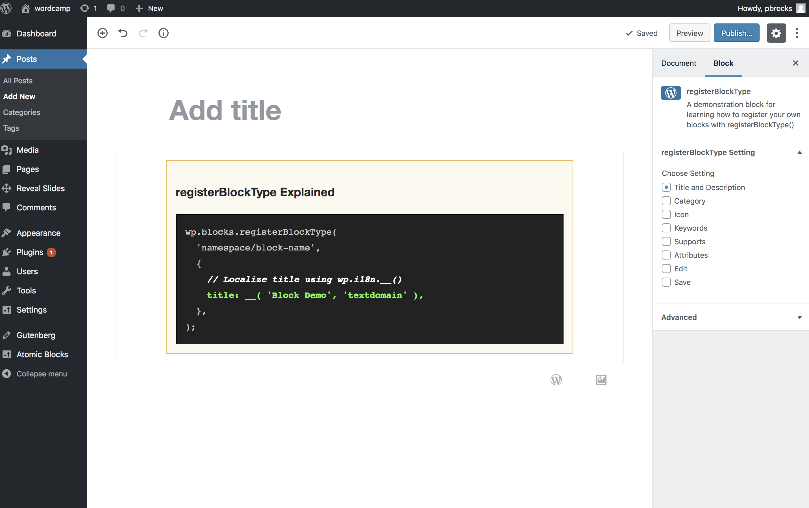
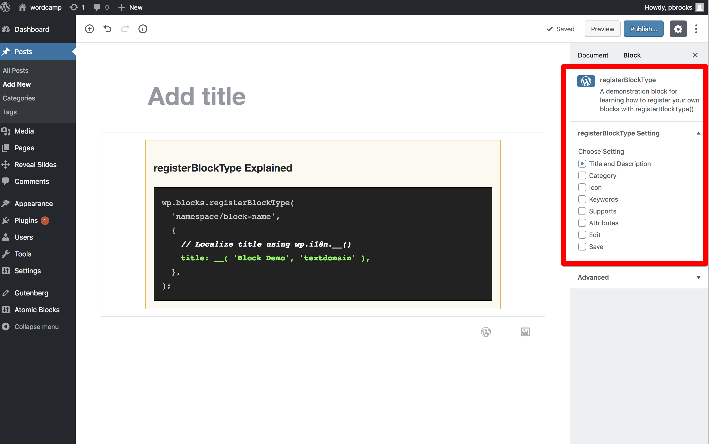
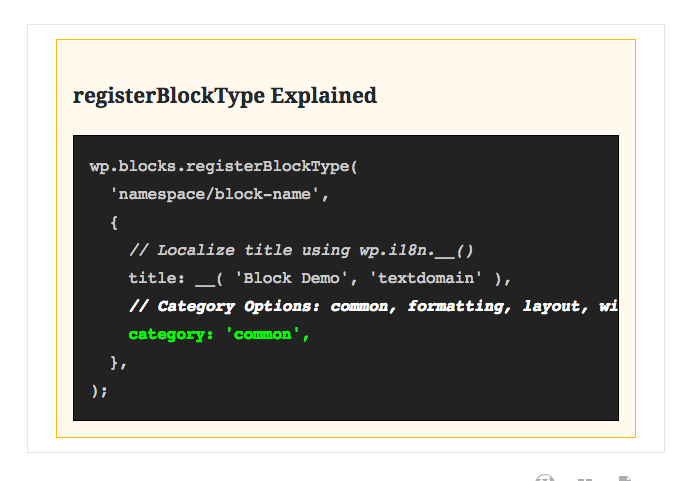
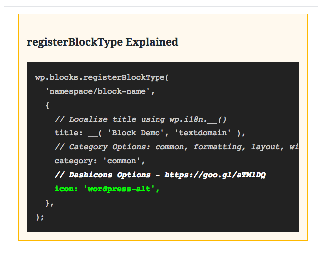

        <title>reveal-md</title>
<!doctype html>
<html lang="en">
    <head>
        <meta charset="utf-8">
        <meta name="viewport" content="width=device-width, initial-scale=1.0, maximum-scale=1.0, user-scalable=no">

        <title>reveal-md</title>
        <link rel="stylesheet" href="./css/reveal.css">
        <link rel="stylesheet" href="./css/theme/sky-three.css" id="theme">
        <link rel="stylesheet" href="./css/highlight/zenburn.css">
        <link rel="stylesheet" href="./css/print/paper.css" type="text/css" media="print">


    </head>
    <body>

        <div class="reveal">
            <div class="slides"><section  data-markdown><script type="text/template"># Redesigning plugin functionality using WP Blocks
<br>
## Paul Barthmaier
#### <span style="color:#2997c8;">Paid Memberships Pro</span> / <span style="color:#8d1296;">Sidetrack Studio</span>

</script></section><section  data-markdown><script type="text/template">

## The Challenge

> The [new] editor will endeavour to create a new page and post building experience that makes writing rich posts effortless, and has “blocks” to make it easy what today might take shortcodes, custom HTML, or “mystery meat” embed discovery. <!-- .element: class="fragment" -->

<br>

#### https://wordpress.org/gutenberg/handbook/ <!-- .element: class="fragment" -->
<aside class="notes"><p>speaker notes FTW!</p>
</aside></script></section><section  data-markdown><script type="text/template">
# Did you catch that?

### Shortcodes <!-- .element: class="fragment" -->

## custom HTML <!-- .element: class="fragment" -->

# “mystery meat” embed <!-- .element: class="fragment" -->

<aside class="notes"><p>Lumping them together seems like they are all bad</p>
</aside></script></section><section  data-markdown><script type="text/template">
## Does that mission statement

## equate the three? <!-- .element: class="fragment" -->

### and worse <!-- .element: class="fragment" -->

## demonize them? <!-- .element: class="fragment" -->
</script></section><section  data-markdown><script type="text/template">
## So something like this:


`[pmpro_checkout_button class="pmpro_btn" level="1" text="Buy Now"]` <!-- .element: class="fragment" -->

# is bad? <!-- .element: class="fragment" -->
</script></section><section  data-markdown><script type="text/template">
## Remember the days of this:
</script></section><section  data-markdown><script type="text/template">
<!-- .slide: data-background="images/button-shortcode1.png" -->


<aside class="notes"><p>speaker notes FTW!</p>
</aside></script></section><section  data-markdown><script type="text/template">
<!-- .slide: data-background="images/button-shortcode2.png" -->


<aside class="notes"><p>speaker notes FTW!</p>
</aside></script></section><section  data-markdown><script type="text/template">
<!-- .slide: data-background="images/button-shortcode3.png" -->


<aside class="notes"><p>speaker notes FTW!</p>
</aside></script></section><section  data-markdown><script type="text/template">
<!-- .slide: data-background="images/button-shortcode4.png" -->


<aside class="notes"><p>speaker notes FTW!</p>
</aside></script></section><section  data-markdown><script type="text/template">
<!-- .slide: data-background="images/button-shortcode5.png" -->


<aside class="notes"><p>speaker notes FTW!</p>
</aside></script></section><section  data-markdown><script type="text/template">
<!-- .slide: data-background="images/button-shortcode6.png" -->


<aside class="notes"><p>speaker notes FTW!</p>
</aside></script></section><section  data-markdown><script type="text/template">
<!-- .slide: data-background="images/button-shortcode7.png" -->


<aside class="notes"><p>speaker notes FTW!</p>
</aside></script></section><section  data-markdown><script type="text/template">
<!-- .slide: data-background="images/button-shortcode8.png" -->


<aside class="notes"><p>speaker notes FTW!</p>
</aside></script></section><section  data-markdown><script type="text/template">
## to yield this:
</script></section><section  data-markdown><script type="text/template">
<!-- .slide: data-background="images/checkout-button-from-shortcode.png" -->
</script></section><section  data-markdown><script type="text/template">
## Is that so wrong?
</script></section><section  data-markdown><script type="text/template">
## Wouldn't this be easier?

</script></section><section  data-markdown><script type="text/template">## Button option: Open in new window

<iframe width="860" height="515" src="screencasts/open-new-window.mp4" frameborder="0" controls allowfullscreen></iframe>
</script></section><section  data-markdown><script type="text/template">
## How do we do it?


</script></section><section  data-markdown><script type="text/template">
## Not so Simple
</script></section><section  data-markdown><script type="text/template">
## Spaceage Technology?

</script></section><section  data-markdown><script type="text/template">
## Complete with creature comforts?


</script></section><section  data-markdown><script type="text/template">## Javascript vs PHP

### PHP requires talking to a database <!-- .element: class="fragment" -->

#### usually over the internet <!-- .element: class="fragment" -->

### Javascript is a browser technology <!-- .element: class="fragment" -->

#### and thus operates on your computer <!-- .element: class="fragment" -->

#### ie not competing for bandwidth and processing speed of servers <!-- .element: class="fragment" -->

</script></section><section  data-markdown><script type="text/template">## Not in the browser

<iframe width="860" height="515" src="//pbrocks.sidetrack.studio/wclvpa2018/screencasts/pmpro-page.mp4" frameborder="0" controls allowfullscreen></iframe>
</script></section><section  data-markdown><script type="text/template">## In the browser

<iframe width="860" height="515" src="//pbrocks.sidetrack.studio/wclvpa2018/screencasts/in-the-browser.mp4" frameborder="0" controls allowfullscreen></iframe>
</script></section><section  data-markdown><script type="text/template">
## What is Javascript?

#### You've heard about <!-- .element: class="fragment" -->
##### Javascript <!-- .element: class="fragment" -->
##### jQuery <!-- .element: class="fragment" -->
##### Angular <!-- .element: class="fragment" -->
##### Vue <!-- .element: class="fragment" -->
##### Node <!-- .element: class="fragment" -->
##### JSX <!-- .element: class="fragment" -->
##### ES6 <!-- .element: class="fragment" -->
##### ESnext <!-- .element: class="fragment" -->
##### EcmaScript <!-- .element: class="fragment" -->
##### ES2015 <!-- .element: class="fragment" -->
##### ES2016 <!-- .element: class="fragment" -->

</script></section><section  data-markdown><script type="text/template">
## What is Javascript?

### Any file that uses a given set of structures and whose filename has a .js extention. <!-- .element: class="fragment" -->
<br>
<br>


#### TLDR: Netscape vs Microsoft <!-- .element: class="fragment" -->
</script></section><section  data-markdown><script type="text/template">
## Javascript vs ECMAscript

### Many different takes on the definitions <!-- .element: class="fragment" -->

<br>

### For the purposes of this talk <!-- .element: class="fragment" -->

### Javascript is the code used in .js files, regardless of its particular flavor <!-- .element: class="fragment" -->

### ECMAScript is code that adheres to standards put forth by the governing body <!-- .element: class="fragment" -->

</script></section><section  data-markdown><script type="text/template">
## Javascript vs ECMAscript

> When people call JavaScript a “dialect of the ECMAScript language,” they mean it in the same sense as when talking about English, French, or Chinese dialects. A dialect derives most of its lexicon and syntax from its parent language, but deviates enough to deserve distinction.

<br>
##### Source: https://medium.freecodecamp.org/whats-the-difference-between-javascript-and-ecmascript-cba48c73a2b5

<aside class="notes"><p>Here&#39;s a nice way to think of things, perhaps it&#39;s just me since it appeals to my linguistic instincts</p>
</aside></script></section><section  data-markdown><script type="text/template">

## Shift to Javascript

<br>

### Shift in the Marketplace <!-- .element: class="fragment" -->

### Shift in demands of users <!-- .element: class="fragment" -->

### Shift in what's possible <!-- .element: class="fragment" -->

## Shift towards SPEED <!-- .element: class="fragment" --></script></section><section  data-markdown><script type="text/template">
## Let's do this!
</script></section><section  data-markdown><script type="text/template">
## Building a Plugin 
</script></section><section  data-markdown><script type="text/template"><!-- .slide: data-background="images/plugin-overview-sublime.png" -->

</script></section><section  data-markdown><script type="text/template"><!-- .slide: data-background="images/folder-overview.png" -->

</script></section><section  data-markdown><script type="text/template"><!-- .slide: data-background="images/babel.png" -->

</script></section><section  data-markdown><script type="text/template"><!-- .slide: data-background="images/package_json.png" -->

</script></section><section  data-markdown><script type="text/template"><!-- .slide: data-background="images/package_json-focus.png" -->

</script></section><section  data-markdown><script type="text/template"><!-- .slide: data-background="images/package_json-babel.png" -->

</script></section><section  data-markdown><script type="text/template"><!-- .slide: data-background="images/package-lock_json.png" -->

</script></section><section  data-markdown><script type="text/template"><!-- .slide: data-background="images/wclvpa-blocks_php.png" -->
</script></section><section  data-markdown><script type="text/template"><!-- .slide: data-background="images/webpack_config_js.png" -->

<aside class="notes"><p>nothing to worry about with the webpack, just copy-paste == Let&#39;s turn back to the base plugin file</p>
</aside></script></section><section  data-markdown><script type="text/template"><!-- .slide: data-background="images/wclvpa-blocks_php.png" -->

<aside class="notes"><p>Doc header matters, since..., but importan thins is NEXT</p>
</aside></script></section><section  data-markdown><script type="text/template"><!-- .slide: data-background="images/wclvpa-blocks_php-focus.png" -->

</script></section><section  data-markdown><script type="text/template"><!-- .slide: data-background="images/blocks_php.png" -->

</script></section><section  data-markdown><script type="text/template"><!-- .slide: data-background="images/webpack_config_js.png" -->
</script></section><section  data-markdown><script type="text/template"><!-- .slide: data-background="images/wclvpa-blocks_php-focus.png" -->

</script></section><section  data-markdown><script type="text/template"><!-- .slide: data-background="images/blocks_php.png" -->
</script></section><section  data-markdown><script type="text/template"><!-- .slide: data-background="images/blocks_php-php-namespacing.png" -->
</script></section><section  data-markdown><script type="text/template"><!-- .slide: data-background="images/blocks_php-php-namespacing-not.png" -->

</script></section><section  data-markdown><script type="text/template"><!-- .slide: data-background="images/blocks_php-dynamic.png" -->

<aside class="notes"><p>Things to note as different</p>
</aside></script></section><section  data-markdown><script type="text/template"><!-- .slide: data-background="images/blocks_php-dependency-array.png" -->
</script></section><section  data-markdown><script type="text/template"><!-- .slide: data-background="images/blocks_php-filetime.png" -->
</script></section><section  data-markdown><script type="text/template"><!-- .slide: data-background="images/blocks.php-enqueue.png" -->
<aside class="notes"><p>No hidden secrets, full disclosure</p>
</aside></script></section><section  data-markdown><script type="text/template"><!-- .slide: data-background="images/blocks_js.png" -->

<aside class="notes"><p>Pretty simple here - This is a React thing to only import what we need</p>
</aside></script></section><section  data-markdown><script type="text/template"><!-- .slide: data-background="images/i18n_js.png" -->

<aside class="notes"><p>trivia for the room, what is the for and why is it called that?</p>
</aside></script></section><section  data-markdown><script type="text/template"><!-- .slide: data-background="images/block_js.png" -->
</script></section><section  data-markdown><script type="text/template"><!-- .slide: data-background="images/register-block.png" -->
</script></section><section  data-markdown><script type="text/template"><!-- .slide: data-background="images/how-to-register-block.png" -->
</script></section><section  data-markdown><script type="text/template"><!-- .slide: data-background-video="screencasts/how-to-register-block.mp4" -->
</script></section><section  data-markdown><script type="text/template">

</script></section><section  data-markdown><script type="text/template">

</script></section><section  data-markdown><script type="text/template">

</script></section><section  data-markdown><script type="text/template">
### title <span style="color:red;">\*Required</span>


</script></section><section  data-markdown><script type="text/template">
### category <span style="color:red;">\*Required</span>


</script></section><section  data-markdown><script type="text/template">### dashicons <span style="color:green;">Optional</span>


</script></section><section  data-markdown><script type="text/template">### keywords <span style="color:green;">Optional</span>


</script></section><section  data-markdown><script type="text/template">
### supports <span style="color:green;">Optional</span>


</script></section><section  data-markdown><script type="text/template">### attributes <span style="color:green;">Optional</span>


</script></section><section  data-markdown><script type="text/template">
### edit <span style="color:red;">\*Required</span>


</script></section><section  data-markdown><script type="text/template">### save <span style="color:red;">\*Required</span>


</script></section><section  data-markdown><script type="text/template">
## Do I need to learn React?
</script></section><section  data-markdown><script type="text/template">
## Probably not.

</script></section><section  data-markdown><script type="text/template">
## Let's install some Node Mudules

by running
 `npm install` 
</script></section><section  data-markdown><script type="text/template">
## From the root of our plugin's folder

<iframe width="860" height="515" src="screencasts/npm-install.mp4" frameborder="0" controls allowfullscreen></iframe>
</script></section><section  data-markdown><script type="text/template">
## What does Webpack do?:

<iframe width="860" height="515" src="screencasts/webpack-watching.mp4" frameborder="0" controls allowfullscreen></iframe>
</script></section><section  data-markdown><script type="text/template">
## Webpack is watching files like:

<iframe width="860" height="515" src="screencasts/webpack-watching-this.mp4" frameborder="0" controls allowfullscreen></iframe>
</script></section><section  data-markdown><script type="text/template">## Button choices:

<iframe width="860" height="515" src="screencasts/button-bait.mp4" frameborder="0" controls allowfullscreen></iframe>

</script></section><section  data-markdown><script type="text/template">
## References

[How to Gutenberg Plugin](https://github.com/zgordon/how-to-gutenberg-plugin/blob/master/jsforwp-how-to-gutenberg.php)</script></section><section  data-markdown><script type="text/template"># Paul Barthmaier
<br>


## Redesigning plugin functionality using WP Blocks

#### <a href="//www.paidmembershipspro.com"><span style="color:#2997c8;">Paid Memberships Pro</span></a> / <a href="//sidetrack.studio"><span style="color:#8d1296;">Sidetrack Studio</span></a>
</script></section></div>
        </div>

        <script src="./lib/js/head.min.js"></script>
        <script src="./js/reveal.js"></script>

        <script>
            function extend() {
              var target = {};
              for (var i = 0; i < arguments.length; i++) {
                var source = arguments[i];
                for (var key in source) {
                  if (source.hasOwnProperty(key)) {
                    target[key] = source[key];
                  }
                }
              }
              return target;
            }

            // Optional libraries used to extend on reveal.js
            var deps = [
              { src: './lib/js/classList.js', condition: function() { return !document.body.classList; } },
              { src: './plugin/markdown/marked.js', condition: function() { return !!document.querySelector('[data-markdown]'); } },
              { src: './plugin/markdown/markdown.js', condition: function() { return !!document.querySelector('[data-markdown]'); } },
              { src: './plugin/highlight/highlight.js', async: true, callback: function() { hljs.initHighlightingOnLoad(); } },
              { src: './plugin/zoom-js/zoom.js', async: true },
              { src: './plugin/notes/notes.js', async: true },
              { src: './plugin/math/math.js', async: true }
            ];

            // default options to init reveal.js
            var defaultOptions = {
              controls: true,
              progress: true,
              history: true,
              center: true,
              transition: 'default', // none/fade/slide/convex/concave/zoom
              dependencies: deps
            };

            // options from URL query string
            var queryOptions = Reveal.getQueryHash() || {};

            var options = {};
            options = extend(defaultOptions, options, queryOptions);
        </script>


        <script>
          Reveal.initialize(options);
        </script>
    </body>
</html>
